1. 介绍
1.1. 软件用途
openTCS（open Transportation Control System 的缩写）是一个免费的控制系统软件，用于协调 自动导引车 (AGV) 和移动机器人的车队，例如在生产工厂中。原则上它应该能够控制任何具备通信能力的自动车辆，但 AGV 是其主要目标。
openTCS 控制车辆时独立于其特定特性，如导航原理/轨道引导系统或载货处理设备。它可以同时管理不同类型的车辆（并执行不同的任务）。
openTCS 本身并不是一个可以直接用来控制 AGV 的完整产品。从根本上说，它是一个框架/实现，提供了运行多车 AGV 系统所需的基本数据结构和算法（车辆路由、向车辆分配运输单、管理车队交通等）。它尽可能保持通用性，以便与几乎所有供应商的车辆进行交互操作。
因此，通常至少需要创建并插入一个车辆驱动（openTCS 术语中称为 通信适配器），该驱动在 openTCS 内核的抽象接口与车辆理解的通信协议之间进行转换。（这种车辆驱动在某种程度上类似于操作系统中的设备驱动。）根据你的需求，可能还需要调整算法或添加项目特定的策略。
1.2. 许可证
openTCS 由 弗劳恩霍夫物流与物料流研究所 (IML) 的 openTCS 团队维护。
openTCS 源代码采用 MIT 许可证条款。请注意，openTCS 不提供任何担保——甚至不提供适销性或特定用途适用性的默示担保。请参阅许可证文件 (LICENSE.txt) 了解详情。
1.3. 扩展文档
如果你打算扩展和定制 openTCS，请同时参阅开发者指南以及 openTCS 发行版中包含的 JavaDoc 文档。
1.4. 支持
请注意，虽然 Fraunhofer IML 很高兴能将 openTCS 作为自由软件向公众发布，并希望看到它被持续使用和改进，但开发团队无法为其提供无限量的免费支持。
如果你有技术/支持问题，请在 项目的讨论论坛 上发布，社区和参与开发的开发人员将根据时间情况回复。请记住在问题报告中包含足够的数据，以帮助开发人员更好地帮助你，例如：
应用程序的日志文件，位于内核、内核控制中心、模型编辑器和操作台应用的
log/子目录中你正在使用的工厂模型，位于内核和/或模型编辑器应用的
data/子目录中
2. 教程
要创建或编辑运输系统的工厂模型，请使用模型编辑器（Model Editor）应用程序。
作为基于现有工厂模型的运输控制系统的图形前端，请使用操作台（Operations Desk）应用程序。 请注意，操作台应用程序始终需要一个正在运行的 openTCS 内核以便连接。
启动应用程序是通过执行相应的 Unix shell 脚本（\*.sh）或 Windows 批处理文件（*.bat）来完成的。
2.1. 构建新的工厂模型
这些说明演示了如何创建一个新的工厂模型并填充行驶路线元素，以便最终用于工厂运行。
2.1.1. 启动模型编辑器
启动模型编辑器（
startModelEditor.bat/.sh）。模型编辑器将启动一个新的空模型，但您也可以从文件（菜单:文件[加载模型]）或当前内核模型（菜单:文件[加载当前内核模型]）加载模型。
后一种选项需要一个正在运行的内核，模型编辑器客户端可以连接到该内核。
使用模型编辑器客户端的图形用户界面为您的相应应用程序/项目创建任意行驶路线。
如何在您的行驶路线中添加点位、路径和车辆等元素将在下一节中详细解释。 每当您想要重新开始，请从主菜单中选择 菜单:文件[新建模型]。
2.1.2. 向工厂模型添加元素
.模型编辑器客户端中的控制元素
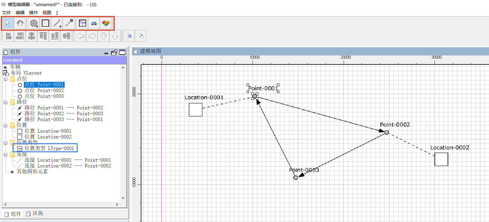
通过从行驶路线元素工具栏中选择点位工具（见上图中的红色框），并在绘图区域点击三个位置，创建三个点位。
通过以下方式将这三个点位与路径链接成一个闭环：
.. 从行驶路线元素工具栏中选择路径工具。 .. 点击一个点位，将路径拖动到下一个点位并在那里释放鼠标按钮。
通过从行驶路线元素工具栏中选择位置工具，并在绘图区域的任意两个空闲位置上点击，创建两个位置。
由于工厂模型中尚不存在位置类型，因此在创建第一个位置时会隐式创建一个新类型，这可以在绘图区域左侧的树视图中看到。
通过以下方式将这两个位置与（不同的）点位链接起来：
.. 从行驶路线元素工具栏中选择链接工具。 .. 点击一个位置，将链接拖动到一个点位并释放鼠标按钮。
通过点击行驶路线元素工具栏中的车辆按钮创建一辆新车。
通过以下方式定义车辆在 newly created 位置允许的操作：
.. 在绘图区域左侧的树视图中选择位置的类型（见上图中的蓝色框）。 .. 点击树视图下方属性窗口中标记为 支持的车辆操作 的值单元格。 .. 在显示的对话框中输入允许的任意文本作为操作，例如 "装载货物" 和 "卸载货物"。 .. 可选地，您可以通过编辑属性 "符号" 为选定类型的位置选择一个符号。
重要提示：除非您在工厂模型中创建位置，将这些位置链接到行驶路线中的点位，并定义车辆可以使用相应位置类型执行的操作，否则您将无法创建任何运输单并将其分配给车辆。
添加和配置外设
如 工厂模型元素 所述，位置可用于映射外设。 这意味着，在执行上述步骤之后，工厂模型中现在有两个位置可用，这些位置可能用于集成两个外设。 要集成一个示例外设，需要执行以下额外步骤：
通过将位置与外设关联：
.. 在绘图区域左侧的树视图中选择位置（例如上图中的 "Location-0001"）。 .. 点击树视图下方属性窗口中标记为 杂项 的值单元格。 .. 添加一个键值对，键为 tcs:loopbackPeripheral，值为空。
通过以下方式定义与该位置关联的外设允许的操作：
.. 在绘图区域左侧的树视图中选择位置的类型（例如上图中的 "LType-0001"）。 .. 点击树视图下方属性窗口中标记为 支持的外设操作 的值单元格。 .. 在显示的对话框中输入允许的任意文本作为操作，例如 "打开门" 和 "关闭门"。
可选地，通过在路径上定义外设操作：
.. 在绘图区域左侧的树视图中选择路径（例如上图中的 "Point-0001 --- Point-0002"）。 .. 点击树视图下方属性窗口中标记为 外设操作 的值单元格。 .. 通过显示的对话框配置并添加外设操作。
注意：上述步骤描述了将位置与由回环外设驱动程序控制的外设关联的过程。 与不需要为回环车辆驱动程序分配进行任何额外配置的车辆不同，位置特别需要上述属性才能为其分配外设回环驱动程序。
重要提示：除非您在工厂模型中创建位置，将这些位置与外设关联，并定义外设可以使用相应位置类型执行的操作，否则您将无法创建任何外设任务并将其分配给外设。
2.1.3. 使用车辆包络线
如 工厂模型元素 所述，可以在点位和路径上定义车辆包络线。 车辆包络线是一系列顶点（即具有 x 和 y 坐标的点），当按定义的顺序连接时，代表车辆可能占据的区域。 除了顶点序列外，包络线键 总是被分配给车辆包络线。 通过引用包络线键，车辆指示在分配资源时应考虑哪些包络线（可能在点位或路径上定义）。 （有关此方面的更多详细信息，请参阅 默认调度器。） 这样，就可以防止车辆分配与其他车辆已分配的相交区域。
注意：如果为车辆设置了包络线键，但在特定资源（即点位或路径）上没有定义具有相应键的包络线，则车辆在分配该资源时将不考虑任何包络线。
.为点位和路径定义和编辑车辆包络线
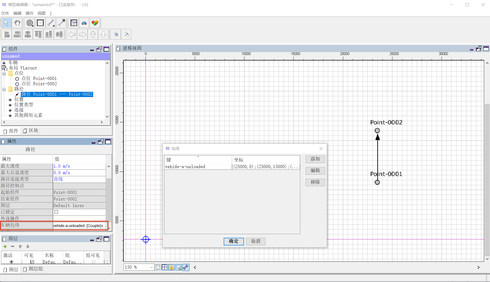
.为车辆设置包络线键
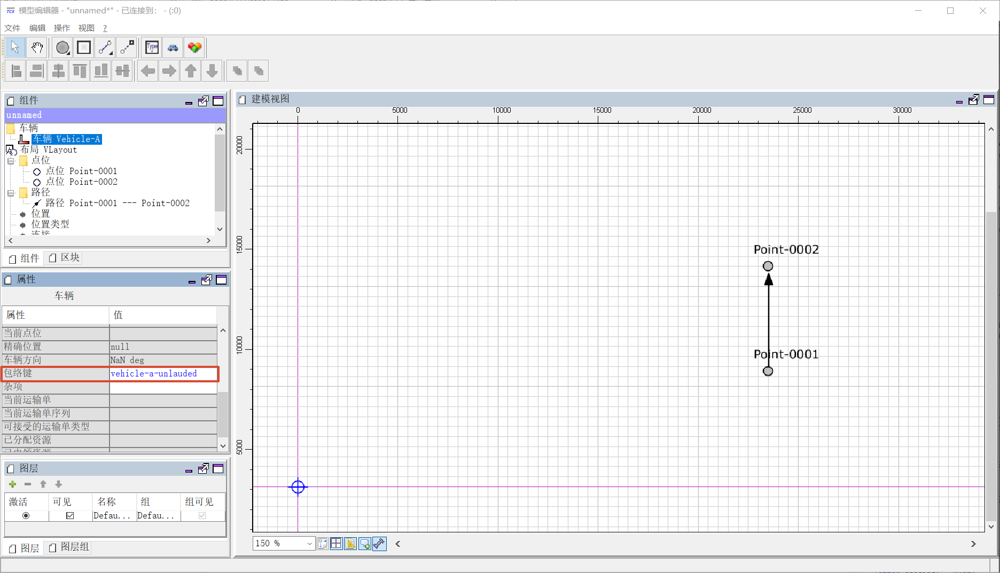
2.1.4. 使用图层和图层组
除了向工厂模型添加元素外，模型编辑器还允许创建具有不同图层和图层组的工厂模型。 有关图层和图层组属性的更多详细信息，请参阅 图层 和 图层组。
注意：在操作台应用程序中，只能显示/隐藏图层和图层组，而不能对其进行操作。
图层
图层对点位、路径、位置和链接进行分组，并允许按需显示或隐藏其包含的行驶路线元素。 可以使用下图所示的面板创建、删除和编辑图层（见红色框）。 在使用图层时，有几点需要注意：
必须至少存在一个图层。
添加新图层时，它始终成为活动图层。
删除图层会导致其包含的行驶路线元素也被删除。
添加模型元素（即点位、路径等）时，它们始终放置在活动图层上。
链接（位置和点位之间）始终放置在与相应位置相同的图层上，无论活动图层是什么。
在对行驶路线元素执行“复制 & 粘贴”、“剪切 & 粘贴”或“重复”操作时，副本始终放置在活动图层上。
注意：在操作台应用程序中，图层的可见性也会影响是否在工厂模型中显示车辆元素。 车辆元素继承其报告所在点位的可见性。 如果车辆在属于隐藏图层（或图层组）的点位上报告，则该车辆元素不会在工厂模型中显示。
.图层面板（工具栏按钮：添加图层、删除（选中）图层、移动（选中）图层向上、移动（选中）图层向下）
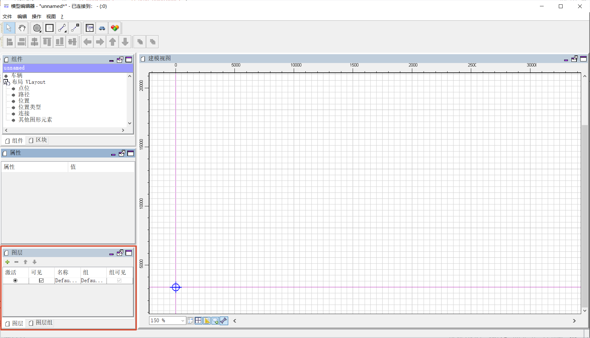
图层组
图层组顾名思义，对一个或多个图层进行分组，并允许同时显示或隐藏多个图层。 可以使用下图所示的面板创建、删除和编辑图层组（见红色框）。 在使用图层组时，有几点需要注意：
必须至少存在一个图层组。
删除图层组会导致分配给它的所有图层也被删除。
.图层组面板（工具栏按钮：添加图层组、删除（选中）图层组）
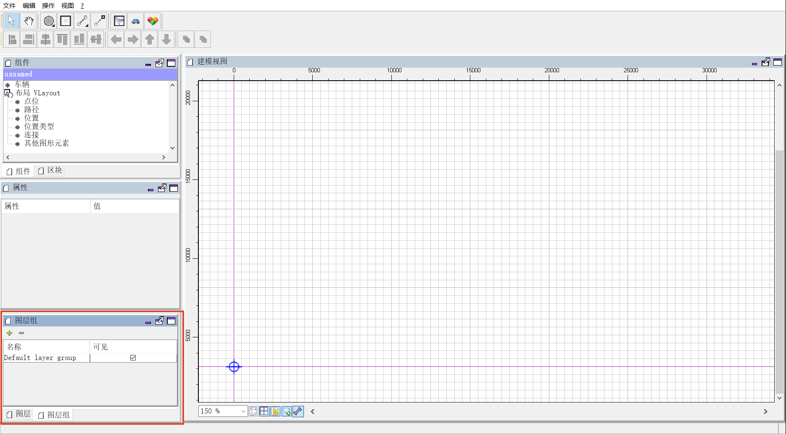
2.1.5. 保存工厂模型
您有两个选项来保存模型：保存在本地硬盘上，或保存在模型编辑器可以连接的正在运行的内核实例中。
在本地保存模型
选择 菜单:文件[保存模型] 或 菜单:文件[保存模型为...] 并为模型输入文件名。
将模型加载到正在运行的内核中
选择 菜单:文件[上传模型到内核]，您的模型将被加载到内核中，使其可用于工厂操作。 不过，这需要您先将其保存到本地。 请注意，之前加载到内核中的任何模型都将被替换，因为内核一次只能存储一个模型。
2.2. 操作工厂
这些说明解释了如何将新创建的加载到内核中的模型用于工厂操作，如何使用车辆驱动程序，以及如何创建运输单并由车辆处理。
2.2.1. 启动系统运行组件
.显示工厂模型的操作台应用程序
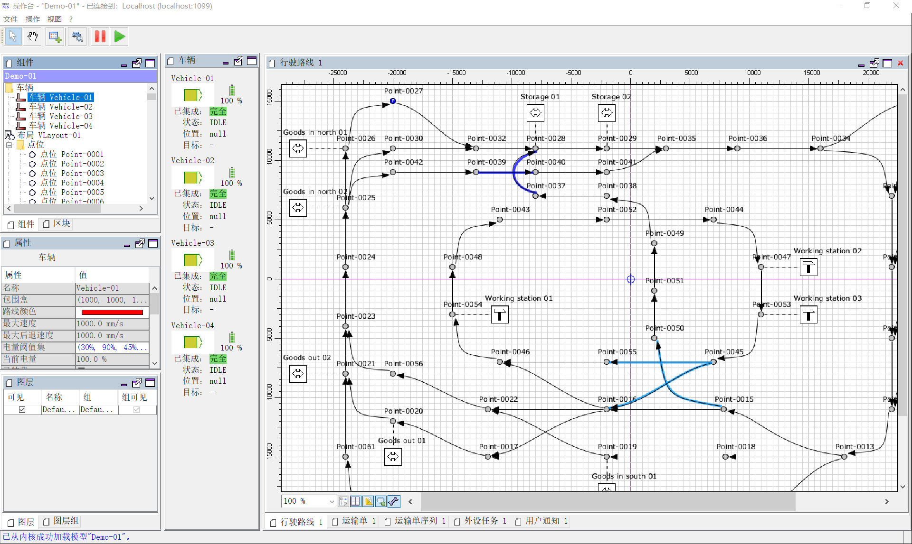
启动内核（
startKernel.bat/.sh）。
.. 如果这是您第一次运行内核，您需要先从模型编辑器中将现有的工厂模型加载到内核中。 （请参阅 将模型加载到正在运行的内核中）。
启动内核控制中心应用程序（
startKernelControlCenter.bat/.sh）启动操作台应用程序（
startOperationsDesk.bat/.sh）在内核控制中心中，选择 车辆驱动程序 选项卡。
然后为模型中的每辆车选择、配置并启动驱动程序。 .. 窗口左侧的列表显示了所选模型中的所有车辆。 .. 双击列表中的车辆名称后，可以在驱动程序面板右侧看到车辆的详细视图。 此详细视图的具体设计取决于与车辆关联的驱动程序。 通常，这里会显示由车辆发送的状态信息（例如当前位置和操作模式），并提供低级设置（例如车辆 IP 地址）。 .. 右键单击车辆列表会显示一个弹出菜单，允许将驱动程序附加到选定的车辆。 .. 要使车辆能够被系统控制，需要将驱动程序附加到车辆并启用。 （为了在没有可以与系统通信的真实车辆的情况下进行测试，可以使用所谓的回环驱动程序，它提供一个大致模拟真实车辆的虚拟车辆。） 有关如何附加和启用车辆驱动程序的详细说明，请参阅 配置车辆驱动程序。
.带有车辆详细视图的驱动程序面板
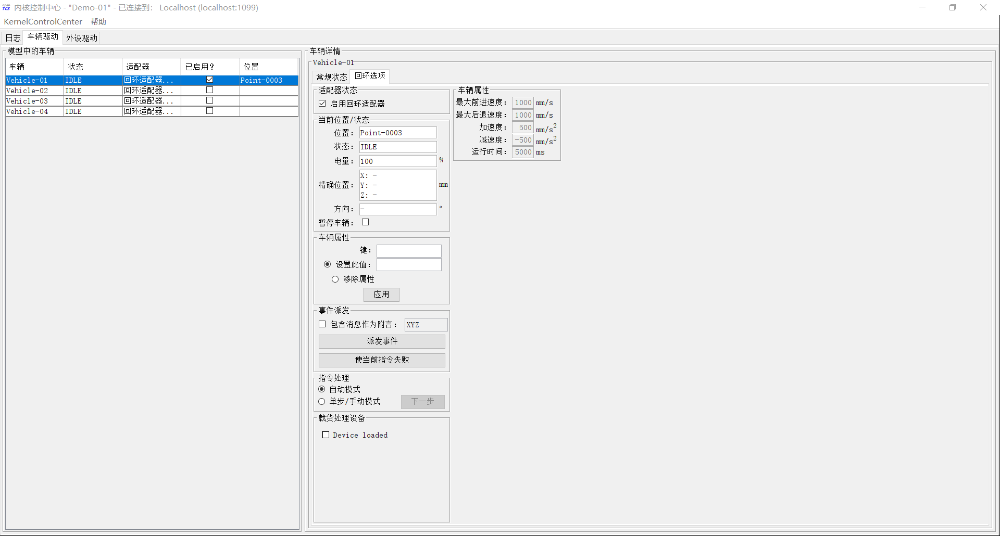
2.2.2. 配置车辆驱动程序
切换到内核控制中心应用程序。
通过将车辆与回环驱动程序关联：右键单击驱动程序面板车辆列表中的车辆，并选择菜单项 菜单:驱动程序[回环适配器（虚拟车辆）]。
通过双击列表中的车辆名称打开车辆的详细视图。
在现在显示在车辆列表右侧的车辆详细视图中，选择 回环选项 选项卡。
通过勾选 回环选项 选项卡中的 启用回环适配器 复选框或车辆列表中 启用？ 列中的复选框来启用驱动程序。
在 回环选项 选项卡或车辆列表中，从工厂模型中选择一个点位，以便回环适配器将该点位报告给内核作为（虚拟）车辆的当前位置。
在 回环选项 选项卡中，可以通过点击 位置 文本来完成此操作。 （在实际应用中，与真实车辆通信的车辆驱动程序一旦知道车辆位置，就会自动将该位置报告给内核。）
切换到操作台客户端。
现在应该在您使用回环驱动程序放置它的点位上显示代表车辆的图标。
右键单击车辆并选择 菜单:上下文菜单[更改集成级别 > ...以利用此车辆处理运输单]，以允许内核调度该车辆。
然后该车辆可用于处理订单，这在操作台应用程序窗口左下角的属性面板中以集成级别 TO_BE_UTILIZED 表示。 （您可以通过右键单击车辆并选择 菜单:上下文菜单[更改集成级别 > ...以尊重此车辆的位置] 来撤销此操作。 现在显示的集成级别是 TO_BE_RESPECTED，并且车辆将不再被调度处理运输单。）
2.2.3. 创建运输单
要创建运输单，操作台应用程序提供了一个对话框窗口，当从菜单中选择 菜单:操作[创建运输单...] 时显示。 运输单定义为一系列目的地位置，车辆在处理该订单时应在这些位置执行操作。 您可以从下拉菜单中选择目的地位置和操作。 您还可以选择 intended 处理此订单的车辆。 如果没有明确选择，控制系统将根据其内部可配置的策略自动将订单分配给车辆（请参阅 默认调度器配置条目）。 您还可以选择或定义要创建的运输单的类型。 此外，可以为运输单指定截止时间，指定最晚完成订单的时间点。 当池中有多个运输单且 openTCS 需要决定下一个分配哪个时，主要考虑此截止时间。
要创建新的运输单，请执行以下操作：
选择菜单项 菜单:操作[创建运输单...]。
在显示的对话框中，点击 添加 按钮，选择位置作为目的地，并选择车辆应在那里执行的操作。
您可以通过这种方式为订单添加任意数量的目的地。 它们将按照给定的顺序进行处理。
通过点击 确定 创建具有给定目的地的运输单后，内核将寻找可以处理该订单的车辆。
如果找到车辆，它将立即被分配该订单，并且为其计算的路径将在操作台应用程序中高亮显示。 然后回环驱动程序模拟车辆移动到目的地并执行操作。
2.2.4. 使用操作台应用程序撤回运输单
可以从正在处理运输单的车辆中撤回运输单。 撤回运输单时，其处理将被取消，车辆（驱动程序）将不再收到任何进一步的移动命令。 可以通过在操作台应用程序中右键单击相应的车辆，选择 菜单:上下文菜单[撤回运输单]，然后选择以下操作之一来发出撤回：
'...并让车辆完成移动'：
车辆将处理它已经收到的任何移动命令，并在处理后停止。 这种类型的撤回应通常用于从车辆中撤回运输单。
'...并立即停止车辆'：
除了常规撤回发生的情况外，还会要求车辆丢弃它已经收到的所有移动命令。 （这 应该 使它在大多数情况下很快停下来。 然而，它究竟还会移动多远完全取决于车辆的类型、其当前状况以及 openTCS 与此类车辆之间的通信方式。） 此外，除车辆当前报告的位置外，撤回路线上所有资源的预留（即接下来的路径和点位）都被取消，使这些资源可供其他车辆使用。 这种强制撤回应非常小心地使用，通常仅在车辆当前 未移动 时使用！
警告：由于强制撤回释放了之前为该车辆保留的路径和点位，其他车辆可能会在撤回后立即获取并使用这些资源。 同时，如果在发出撤回时车辆正在移动，它可能 - 取决于其类型 - 尚未停止，并且仍沿其先前被命令遵循的路线移动。 由于后一种运动不受 openTCS 协调，这可能导致车辆之间的 碰撞或死锁！ 因此，强烈建议仅在必要时才发出强制撤回，并且仅在车辆已经在行驶路线中的某个位置停止或其他车辆无需考虑的情况下。 在所有其他情况下，应使用常规撤回。
撤回的运输单的处理 不能 稍后恢复。 要恢复因撤回运输单而中断的运输过程，您需要创建一个新的运输单，当然，它可以包含与撤回的运输单相同的目的地。 但是，请注意，新运输单不能使用相同的名称创建。 原因是：
a. 运输单的名称必须是唯一的。 b. 撤回运输单仅中止其处理，但并未立即从内核内存中移除它。 运输单数据会作为历史信息保留一段时间，然后才被完全移除。 （旧订单保留多长时间取决于内核应用程序的配置 -- 请参阅 订单池配置条目。）
因此，用于运输单的名称最终可能会被重用，但只有在旧订单的实际数据被移除之后。
2.2.5. 连续创建运输单
注意：操作台应用程序可以通过自定义插件轻松扩展。 作为参考，包含一个简单的负载生成器插件，此处也用作系统运行期间外观的演示。 有关如何创建自定义插件并将其集成到操作台应用程序中的详细信息，请参阅开发者指南。
在操作台应用程序中，从菜单中选择 菜单:视图[插件 > 连续负载]。
选择创建新运输单的触发器：
新订单要么只创建一次，要么当系统中未处理的订单数量低于指定限制时创建，要么在指定超时过期后创建。
通过使用订单配置文件，您可以决定运输单的目的地是否应随机选择，或者您是否想自己选择。
+ 使用 随机创建订单，您定义每次生成的运输单数量，以及单个运输单应包含的目的地数量。 由于目的地将随机选择，创建的订单对于真实系统来说不一定有意义。 + 使用 根据定义创建订单，您可以定义任意数量的运输单，每个运输单具有任意数量的目的地和属性，并保存和加载您的运输单列表。
通过激活 连续负载 面板底部的相应复选框来启动订单生成器。
然后负载生成器将根据其配置生成运输单，直到复选框被停用或面板关闭。
2.2.6. 配置外设驱动程序
注意：为了执行以下步骤，请确保首先按照 添加和配置外设 所述将位置与外设关联。
切换到内核控制中心应用程序。
选择 外设驱动程序 选项卡。
应该已经将位置与外设回环驱动程序关联。
通过双击列表中外设的名称打开位置的详细视图。
在现在显示在外设列表右侧的位置详细视图中，选择 回环选项 选项卡。
通过勾选外设列表中 启用？ 列中的复选框来启用驱动程序。
切换到操作台客户端。
现在该外设可用于处理外设任务。
2.2.7. 创建外设任务
外设任务定义为由处理该任务的外设执行的单个操作。 外设任务可以显式或隐式创建；以下部分描述了这两种方式。
注意：有关如何将外设任务分配给外设的信息，请参阅 默认外设任务调度器。 有关如何配置控制系统内部用于分配外设任务的策略的信息，请参阅 默认外设任务调度器配置条目。
显式创建外设任务
要在操作台应用程序中创建新的外设任务，请执行以下操作：
选择菜单项 菜单:操作[创建外设任务...]。
在显示的对话框中，选择与应分配外设任务的外设关联的位置，以及外设应执行的操作。
此外，为预留令牌输入一些任意文本。 （目前，预留令牌并不重要。 唯一重要的是它不为空。 有关预留令牌的更多详细信息，请参阅 默认外设任务调度器。）
通过点击 确定 创建外设任务后，内核将尝试将其分配给与给定位置关联的外设以处理该任务。
一旦分配了外设任务，回环驱动程序就模拟外设执行操作。
注意：虽然使用此选项创建外设任务是可以的，但下一个选项是首选选项，因为它允许车辆和外设之间的直接交互。
隐式创建外设任务
注意：为了使隐式创建外设任务正常工作，请确保首先按照 添加和配置外设 所述在路径上定义外设操作。
车辆可以在遍历定义了外设操作的路径时隐式创建外设任务。 何时为路径上定义的外设操作创建外设任务取决于外设操作本身的配置。 如 外设操作 所述，外设操作的 执行触发器 定义了何时应由外设执行该操作。 请注意关于属于外设操作的外设任务的创建时间：
AFTER_ALLOCATION（以前称为BEFORE_MOVEMENT）：一旦为车辆分配了对应路径的资源，就创建外设任务。
这意味着如果车辆可以提前接受多个（点位和）路径，则在车辆甚至到达实际路径之前就可能创建外设任务。
AFTER_MOVEMENT：一旦车辆完全遍历路径并将相应的移动命令报告为已执行（即车辆到达路径的相应终点），就创建外设任务。
2.2.8. 使用操作台应用程序撤回外设任务
如何撤回外设任务取决于它是否与运输单相关：
与运输单无关的外设任务以及与处于最终状态（已完成或失败）的运输单相关的外设任务，可以通过在外设任务表中选择它们并点击表上方显示的撤回按钮来撤回。
与运输单相关的外设任务将在 respective 运输单被撤回时隐式中止。
不支持独立于相关运输单撤回它们（除非相关运输单已经处于最终状态 -- 见上文。）
对于常规撤回的运输单，相关的外设任务在车辆完成其待处理移动后中止。
对于强制撤回的运输单，相关的外设任务立即中止。
外设任务失败的后果
当外设任务失败时，相关的运输单（如果有）在以下情况下会被隐式撤回：
外设任务是由车辆遍历路径隐式创建的（请参阅 隐式创建外设任务）。
外设任务的外设操作的 完成必需 标志设置为
true。
在这种情况下，继续运输单是不合理的，因为 完成必需 标志不仅表明车辆应等待外设操作完成，而且还要等待其 成功 完成。 否则，继续驾驶/运输单的前提条件可能不满足。
2.2.9. 从运行中的系统中移除车辆
在某些情况下，您可能希望从系统中移除单个车辆，例如，因为车辆暂时无法被 openTCS 使用，由于必须先处理的硬件故障。 以下步骤将确保没有进一步的运输单分配给车辆，并且它可能仍然占用的资源被释放供其他车辆使用。
在操作台应用程序中，右键单击车辆并选择 菜单:上下文菜单[更改集成级别 > ...以忽略此车辆]，以禁用车辆处理运输单并释放车辆占用的行驶路线中的点位。
在内核控制中心应用程序中，通过取消勾选 回环选项 选项卡中的 启用回环适配器 复选框或车辆列表中 启用？ 列中的复选框来禁用车辆的驱动程序。
2.2.10. 暂停和恢复车辆操作
操作台应用程序提供了两个按钮，可以暂停或恢复车辆的操作。 但是，为了使这些按钮生效，所用车辆的相应车辆驱动程序必须实现并支持此功能。
.操作台应用程序中的暂停和恢复按钮
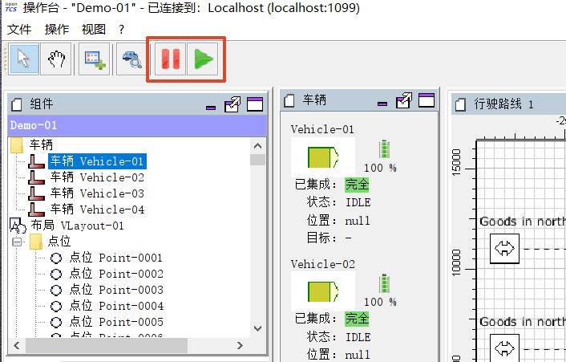
3. 操作指南
3.1. 在点位之间创建曲线路径
在模型编辑器应用程序中，从路径工具中选择 贝塞尔曲线，通过点击第一个点位、将鼠标拖动到第二个点位并在那里释放鼠标按钮来连接两个点位。
激活选择工具并点击之前创建的贝塞尔曲线路径。
将出现两个蓝色控制点。
拖动控制点以更改路径的形状。
3.2. 在启动时自动启用驱动器
要在内核启动时自动启用车辆驱动器，请在内核配置文件（内核应用程序目录中的 config/opentcs-kernel.properties）中添加以下行：
kernelapp.autoEnableDriversOnStartup = true要在启动时启用外围驱动器，请添加以下行：
kernelapp.autoEnablePeripheralDriversOnStartup = true|
注意
有关所有内核配置条目的描述，请参阅内核配置。 |
3.3. 在启动时自动选择特定的车辆驱动器
默认情况下，车辆驱动器的自动附加工作方式如下： 内核询问每个可用的车辆驱动器是否可以附加到给定的车辆，并选择第一个可以附加的驱动器。 回环驱动器最后被询问，因为它始终可用且可以附加到任何车辆，但不应阻止实际车辆驱动器的附加。 因此，如果您的车辆只有一个驱动器，通常无需进行任何操作即可选中它。
在一些不太常见的情况下，您可能在内核中注册了多个车辆驱动器，它们都可以附加到您工厂模型中的车辆。 在这种情况下，要自动选择特定的驱动器，请在车辆上设置一个键为 tcs:preferredAdapterClass 的属性，其值为实现驱动器适配器工厂的 Java 类名称。 （如果您不知道此类名称，请咨询为您提供车辆驱动器的开发人员。）
3.4. 配置虚拟车辆的特性
回环驱动器支持通过工厂模型中设置的属性对虚拟车辆的某些（有限）特性进行配置。 您可以通过以下方式设置属性：
启动模型编辑器应用程序并创建或加载工厂模型。
在模型编辑器应用程序的工厂模型树视图中，选择一个车辆。
在显示车辆属性的表中，单击标记为 杂项 的值字段。
在显示的对话框中，根据下面的列表添加属性键和值。
保存模型并按照 保存工厂模型 中的描述将其上传到内核。
回环驱动器解释具有以下键的属性：
loopback:initialPosition:
将属性值设置为工厂模型中某个点位的名称。 启动时，回环适配器会将虚拟车辆的当前位置设置为该位置。 （默认值：未设置）
loopback:acceleration:
将属性值设置为表示加速度（单位为 mm/s^2^）的正整数。 回环适配器将模拟具有给定加速度的车辆运动。 （默认值：500）
loopback:deceleration:
将属性值设置为表示减速度（单位为 mm/s^2^）的负整数。 回环适配器将模拟具有给定减速度的车辆运动。 （默认值：-500）
loopback:loadOperation:
将属性值设置为表示虚拟车辆装载操作的字符串。 当虚拟车辆执行此操作时，回环适配器会将其负载处理装置的状态设置为 满载。 （默认值：未设置）
loopback:unloadOperation:
将属性值设置为表示虚拟车辆卸载操作的字符串。 当虚拟车辆执行此操作时，回环适配器会将其负载处理装置的状态设置为 空载。 （默认值：未设置）
loopback:operatingTime:
将属性值设置为表示虚拟车辆运行时间（单位为毫秒）的正整数。 当虚拟车辆执行操作时，回环适配器会相应地模拟运行时间。 （默认值：5000）
3.5. 转换发送给/从车辆接收的坐标
有可能由 openTCS 内核实例管理的所有车辆并未使用与工厂模型相同的坐标系。 为了简化此类情况下的集成，内核可以在发送/接收坐标时对其进行转换。本节介绍包含的转换方法。
|
注意
此机制是可扩展的： |
开发人员可以将自己的转换组件集成到 openTCS 内核中，以对发送给/从车辆接收的数据应用自定义的复杂转换。
包含的转换方法将坐标从工厂模型的坐标系映射到车辆的坐标系（当向车辆发送坐标时），反之亦然（当从车辆接收坐标时）。 为此，可以通过提供以下内容来定义车辆坐标系相对于工厂模型坐标系的位置和方向...
相对于工厂模型坐标系原点的 x、y 和 z 方向的平移量。
（示例：偏移量 x=1000、y=2000 和 z=3000 意味着车辆坐标系的原点位于工厂模型坐标系中的坐标 x=1000、y=2000 和 z=3000 处。）
相对于工厂模型坐标系的方向，沿车辆坐标系 z 轴的旋转角度。
（示例：90 度旋转意味着车辆坐标系相对于工厂模型坐标系逆时针旋转 90 度。）
要为特定车辆使用此转换方法，请在工厂模型中针对相应的车辆元素执行以下操作：
将键为
tcs:vehicleDataTransformer的属性设置为值COORDINATE_SYSTEM_MAPPER。将键为
tcs:coordinateSystemMapper.translation.x、tcs:coordinateSystemMapper.translation.y和tcs:coordinateSystemMapper.translation.z的属性设置为 x、y 和 z 方向平移量的值。
预期这些值分别为整数值，并以毫米描述平移量。 如果未设置其中一个属性，则对于相应的平移量使用 0 毫米的平移。
将键为
tcs:coordinateSystemMapper.rotation.z的属性设置为沿坐标系 z 轴旋转的值。
预期该值为以度为单位的浮点值。 如果未设置该属性，则使用 0 度的旋转。
3.6. 在单独的系统上运行内核及其客户端
内核及其客户端（模型编辑器、操作台和内核控制中心应用程序）通过 Java 远程方法调用 (RMI) 机制进行通信。 这使得只要在这些系统之间存在可用的网络连接，就可以在内核和客户端上分别运行它们。
默认情况下，模型编辑器、操作台和内核控制中心配置为连接到在同一主机上运行的内核。 要将它们连接到在远程主机（例如名为 myhost.example.com 的主机）上运行的内核，请执行以下操作：
对于模型编辑器，将配置参数
modeleditor.connectionBookmarks设置为SomeDescription|myhost.example.com|1099。对于操作台，将配置参数
operationsdesk.connectionBookmarks设置为SomeDescription|myhost.example.com|1099。对于内核控制中心，将配置参数
kernelcontrolcenter.connectionBookmarks设置为SomeDescription|myhost.example.com|1099。
配置值可以是 <描述>|<主机>|<端口> 集合的逗号分隔列表。 应用程序将自动尝试连接到列表中的第一个主机。 如果失败，它们将显示一个对话框以选择条目或输入不同的地址进行连接。
3.7. 加密与内核的通信
默认情况下，客户端应用程序和内核通过纯 Java 远程方法调用 (RMI) 调用或 HTTP 请求进行通信。 这些通信通道可以选择性地通过 SSL/TLS 进行加密。 要实现这一点，请执行以下操作：
生成密钥库/信任库对（
keystore.p12和truststore.p12）。
.. 您可以使用内核应用程序目录中提供的 Unix shell 脚本或 Windows 批处理文件（generateKeystores.sh/.bat）来完成此操作。 .. 这些脚本使用包含在 Java JDK 和 JRE 中的密钥和证书管理工具 'keytool'。 如果 'keytool' 不包含在系统的 Path 环境变量中，则需要修改相应脚本中的 KEYTOOL_PATH 变量以指向 'keytool' 所在的位置。 .. 默认情况下，生成的文件放置在应用程序的 config 目录中。
将
truststore.p12文件复制到客户端应用程序（模型编辑器、操作台或内核控制中心）的config目录中。
也将文件保留在内核应用程序的 config 目录中。
在内核的配置文件中，为 RMI 接口和/或 Web 服务接口启用 SSL。
（有关配置条目的描述，请参阅 RMI 内核接口配置条目 和/或 服务 Web API 配置条目。）
如果您为 RMI 接口启用了 SSL，则还需要在模型编辑器、操作台和内核控制中心的配置文件中启用它。
（有关配置条目的描述，请参阅 SSL 模型编辑器端应用程序配置条目、SSL 操作台端应用程序配置条目 和 SSL KCC 端应用程序配置条目。）
3.8. 在多宿主内核主机上启用 RMI
如果您的内核运行在具有多个 IP 地址的主机上，您可能会观察到通过 RMI 连接与远程客户端的连接问题。 客户端可能无法连接到内核，或者客户端与内核之间的通信可能很慢，特别是在为 RMI 接口启用 SSL 时。
在这种情况下，将内核 JVM 的属性 java.rmi.server.hostname 设置为运行它的机器的正确 IP 地址。 （另请参阅 https://docs.oracle.com/javase/8/docs/technotes/guides/rmi/faq.html#netmultihomed。）
3.9. 配置自动停车和充电
默认情况下，空闲车辆在处理完最后一个运输单后保持原位。 您可以在内核的配置文件中更改此行为：
要自动命令车辆前往充电位置，请将配置参数
defaultdispatcher.rechargeIdleVehicles设置为true。
默认调度程序将查找空闲车辆可以进行充电操作的位置，并创建订单将其发送到该位置（如果未被占用）。 （请注意，用于操作的字符串是特定于驱动程序的。）
要自动命令车辆前往停车位置，请将配置参数
defaultdispatcher.parkIdleVehicles设置为true。
默认调度程序将查找空闲的停车位置，并创建订单将空闲车辆发送到那里。
3.10. 配置订单池清理
默认情况下，openTCS 每分钟检查一次已完成或失败的运输单以及超过 24 小时的外围作业。 这些订单和作业将从池中移除。 要自定义此行为，请执行以下操作：
将配置条目
orderpool.sweepInterval设置为符合您需求的值。
默认值为 60.000（毫秒，对应于一分钟的间隔）。
将配置条目
orderpool.sweepAge设置为符合您需求的已完成订单和作业的最大年龄。
默认值为 86.400.000（毫秒，对应于 24 小时，即已完成订单或作业应在池中保留的时间）。
3.11. 使用模型元素属性进行项目特定数据存储
工厂模型中的每个对象——即点位、路径、位置、位置类型和车辆——都可以增强任意项目特定数据，这些数据可用于车辆驱动器、自定义客户端应用程序等。 此类数据的可能用途包括通知车辆驱动器在沿模型中的路径移动时要执行的其他操作（例如闪烁方向指示灯、在显示器上显示文本字符串、发出声音警告）或控制外围系统的行为（例如自动防火闸门）。
数据可以存储在属性中，即附加到模型元素的键值对，其中键和相应的值都是文本字符串。 可以使用模型编辑器应用程序创建和编辑这些键值对： 只需选择要添加键值对的模型元素，并单击属性表中标记为 杂项 的值字段。 在显示的对话框中，设置您需要存储项目特定信息的键值对。
|
注意
对于您的项目特定键值对，您可以指定任意键。 |
openTCS 本身不会使用这些数据；它只会存储并提供给自定义车辆驱动器和/或其他扩展使用。 但是，您不应使用以 "tcs:" 开头的键来存储项目特定数据。 任何带有此前缀的键都保留用于官方 openTCS 功能，使用它们可能会导致冲突。
4. 参考
4.1. 支持的导航原理/车辆类型
openTCS 独立于特定的导航实现，因此可以使用任何类型的导航原理。 定位和导航通常是车辆端执行的任务： 车辆只需向控制系统报告其当前状态——包括其位置——然后控制系统命令车辆移动到不同的位置。
请注意，openTCS 专注于为运输单调度车辆。 此任务不应与较低层级的车辆端任务（如加速、减速和转向）混淆，后者不在 openTCS 的范围内。 因此，openTCS 的使用并不局限于特定类型的车辆。
4.2. 最大车队规模
软件的设计并未对单个 openTCS 实例可管理的车辆数量施加特定限制。 然而，所使用的硬件设备/运行环境（CPU、RAM、通信带宽等）可能会限制系统的有效性能。
4.3. 车辆要求
要使车辆能够被 openTCS 管理，它需要满足某些最低要求：
必须能够与车辆进行通信。
（这意味着必须指定并可以访问车辆的通信接口。） 通信的具体实现方式并不重要，只要存在通信硬件并且有一种方法让 openTCS 利用该通信通道即可。 在许多情况下，使用标准的 Wi-Fi 硬件。
车辆必须能够报告其当前位置/状态。
车辆必须能够执行从其当前位置到 openTCS 给定的行驶路径/环境中附近位置的移动指令。
4.4. 系统要求
openTCS 没有任何特定的硬件要求。 CPU 性能和 RAM 容量高度依赖于用例，例如行驶路径的大小和复杂性以及管理的车辆数量。 需要某种类型的网络硬件——在大多数情况下，仅仅是标准以太网控制器——用于与车辆（以及可能的其他系统，如仓库管理系统）进行通信。
要运行 openTCS，需要 Java 运行时环境 (JRE) 版本 21。 （已安装 JRE 的 bin 目录，例如 C:\Program Files\Eclipse Adoptium\jdk-21.0.3.9-hotspot\bin，应包含在环境变量 PATH 中，以便使用其中包含的启动脚本。）
重要提示：由于 openTCS 使用的某个软件库（即：Docking Frames）的限制，某些 JRE 目前与 openTCS 不兼容。 Oracle 提供的 JRE 就是其中之一。 建议使用的 JRE 是由 https://adoptium.net/[Adoptium 项目] 提供的。
4.5. 系统组件和结构
openTCS 由以下作为单独进程运行并在客户端-服务器架构中协同工作的组件组成：
内核（服务器进程），运行车辆独立的策略和控制车辆的驱动程序
客户端
用于建模工厂模型的模型编辑器
用于在工厂运行期间可视化工厂模型的操作台
内核控制中心，用于控制和监控内核，例如提供车辆及其关联驱动程序的详细视图
用于与其他系统通信的任意客户端，例如用于过程控制或仓库管理
.openTCS 系统概览
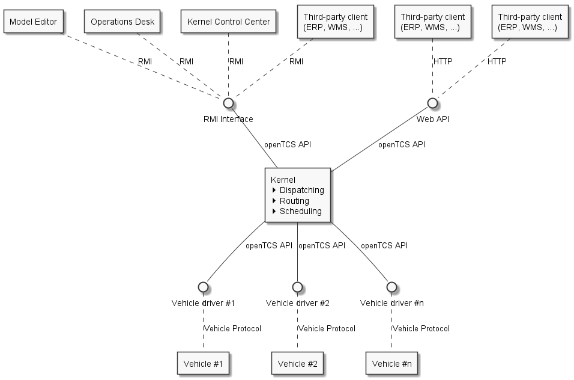
openTCS 内核的目的是提供运输系统/工厂的抽象驾驶模型，管理运输单并为车辆计算路线。 客户端可以与该服务器进程通信，以修改工厂模型、可视化行驶路径和运输单的处理过程，以及创建新的运输单。
内核中的三个主要策略模块负责处理运输单：
调度器决定哪个运输单应由哪辆车处理。
此外，它还需要决定在某些情况下车辆应该做什么，例如当没有运输单时或当车辆电量低时。
路由器为车辆找到到达目的地的最佳路线。
调度器管理交通管理的资源分配，即避免车辆相互碰撞。
openTCS 发行版为每种策略提供了默认实现。 这些实现可以由开发人员轻松替换，以适应特定环境的要求。
作为 openTCS 内核一部分的驱动程序框架管理通信通道并将车辆驱动程序与车辆关联起来。 车辆驱动程序是内核与车辆之间的适配器，将每种车辆特定的通信协议转换为内核的内部通信方案，反之亦然。 此外，驱动程序可以通过内核控制中心客户端向用户提供低级功能，例如手动向关联的车辆发送电报。 通过使用合适的车辆驱动程序，单个 openTCS 实例可以同时管理不同类型的车辆。
作为 openTCS 发行版一部分的模型编辑器客户端允许编辑工厂模型，这些模型可以加载到内核中。 这包括定义换载站、行驶轨道和车辆等。
作为 openTCS 发行版一部分的操作台客户端用于显示运输系统的总体状态和任何活跃的运输过程，并交互式地创建新的运输单。
作为 openTCS 发行版一部分的内核控制中心客户端允许控制和监控内核。 其中包括将车辆驱动程序分配给车辆并通过启用通信来控制它们，以及通过显示车辆状态信息等方式监控它们。
可以实现并附加其他客户端，例如用于控制更高层级的工厂流程。 对于 Java 客户端，openTCS 内核提供了一个基于 Java RMI（远程方法调用）的接口。 此外，openTCS 提供了一个 Web API，用于创建和撤回运输单以及检索运输单状态更新。
4.6. 工厂模型元素
在 openTCS 中，工厂模型由以下一组元素组成。 这些元素中与工厂模型相关的属性（例如点位的坐标或路径的长度）可以使用模型编辑器客户端进行编辑。
4.6.1. 点位
点位是驾驶路线中离散车辆位置逻辑映射。 在工厂运行模式下，车辆被排序（从而移动）从模型中的一个点位到另一个点位。 一个点位具有以下属性：
一个 类型，可以是以下之一：
停车位置：
表示车辆在处理指令期间可以暂时停止的位置，例如执行操作。 当车辆到达此类位置时，预期它会报告进入。 不过，它在此处停留的时间不应超过必要时间。 使用模型编辑器客户端建模时，停车位置是点位的默认类型。
泊车位置：
表示车辆在未处理指令时可以长时间停止的位置。 当车辆到达此类位置时，也预期它会报告进入。
一个 位置，即点位在工厂坐标系中的坐标。
一个 车辆朝向角，表示车辆占据该点位时的假设/预期朝向。
一组 车辆包络线，描述位于该点位的车辆所占用的区域。
一个 最大车辆边界框，描述位于该点位的车辆可能具有的最大边界框（有关更多信息，请参阅 边界框）。
NOTE：在 openTCS 中，0 度角位于 3 点钟位置，正值表示逆时针旋转。
边界框
.openTCS 中的边界框
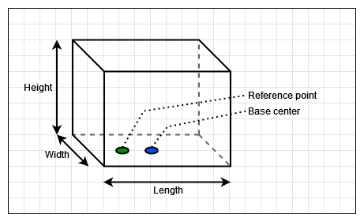
边界框的特征是一个参考点，默认情况下该参考点位于边界框底部（即高度为 0）的中心，本节其余部分将其称为 底边中心。 边界框的长度和宽度相对于底边中心是对称的，高度是从边界框的底部测量的。
可选地，参考点偏移量描述了参考点相对于底边中心的位置。 参考点的坐标指的是一个坐标系，其原点位于底边中心，其轴沿边界框的纵向和横向轴运行——即 x 轴沿边界框的长度运行，y 轴沿边界框的宽度运行。
对于车辆，边界框的方向使其纵轴与车辆的纵轴平行。 对于参考点偏移量，正的 x 值表示向车辆前进方向的偏移，正的 y 值表示向左侧的偏移。 例如，车辆的物理参考点——即其报告的坐标所指的点——与其边界框的参考点很可能始终对齐。
对于点位，边界框的方向根据点位的朝向角确定，以便边界框的纵轴与位于该点位的车辆的纵轴平行。 对于参考点偏移量，正的 x 值表示向车辆前进方向的偏移，正的 y 值表示向左侧的偏移。
下图显示了车辆（左侧）和点位（右侧）的边界框示例。 （虽然 openTCS 中的边界框是三维的，但此处显示的示例边界框仅为二维，以便于理解可视化。）
.车辆和点位的边界框
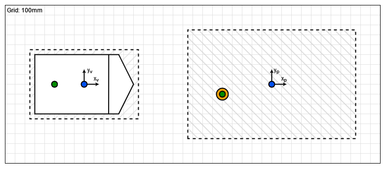
在这两种情况下，蓝点代表各自边界框的底边中心，绿点代表它们的参考点。 虚线代表各自边界框的周长。 在右侧，橙点代表实际的工厂模型点位。 在上述示例中，边界框具有以下属性：
[cols="1,1,1,1,1,1", options="header"]
|省略
|省略
作为额外的示例，下图显示了边界框之间的关系，以及如果车辆位于该点位上会是什么样子。 （请注意，两个边界框的参考点是齐平的。）
.车辆和点位边界框的关系
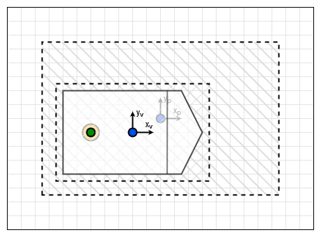
在此示例中，点位的边界框完全包围了车辆的边界框。 然而，在某些情况下可能并非如此，车辆的边界框可能会超出点位边界框的一边或多边。 为了防止在这种情况下将车辆发送到该点位，路由器提供了一个专用的成本函数——请参阅 默认路由器。
4.6.2. 路径
路径是车辆可导航的点之间的连接。 除了源点和目标点之外，路径的主要属性包括：
它的 长度，这对于工厂运行模式下的车辆可能是相关信息。
根据路由器配置，它也可用于计算路由成本/寻找到达目标点的最优路径。
一个 最大速度 和 最大倒车速度，这对于工厂运行模式下的车辆可能是相关信息。
根据路由器配置，它也可用于计算路由成本/寻找到达目标点的最优路径。
一个 锁定 标志，当设置时，告诉路由器在计算车辆的路由时不得使用此路径。
一系列 外设任务，描述当车辆穿越路径时由外设设备（按给定顺序）执行的操作。
一组 车辆包络线，描述穿越路径的车辆所占用的区域。
外设任务
外设任务的属性包括：
对 位置 的引用，该位置代表执行该操作的外设设备——请参阅 位置。
外设设备要执行的 实际 操作。
一个 执行触发器，定义执行操作的时机。
支持的值为： AFTER_ALLOCATION：应在车辆 已分配 路径后触发操作的执行。 AFTER_MOVEMENT：应在车辆 已穿越 路径后触发操作的执行。
一个 完成必需 标志，当设置时，要求操作完成以允许车辆继续行驶。
此标志与执行触发器配合工作。 使用 AFTER_ALLOCATION 执行触发器并将完成必需标志设置为 true 时，车辆必须在路径的源点等待，直到操作完成。 使用 AFTER_MOVEMENT 执行触发器并将完成必需标志设置为 true 时，车辆必须在路径的目标点等待，直到操作完成。
4.6.3. 位置
位置是标记车辆可以执行特殊操作（如装载或卸载货物、充电等）的点位的标记。 位置的属性包括：
它的 类型，基本上定义了允许在该位置执行哪些操作——请参阅 位置类型。
一组指向 链接 到点位的链接，从这些点位可以到达该位置。
为了在工厂模型中对车辆有用，位置需要至少链接到一个点位。
一个 锁定 标志，当设置时，告诉调度程序可能需要在该位置执行操作的运输单不得分配给车辆。
此外，位置还可以映射外设设备，以便与其通信并允许车辆与之交互（例如，沿路径打开/关闭防火门）。 有关如何添加和配置外设设备的详细信息，请参阅 添加和配置外设设备。
4.6.4. 位置类型
位置类型是抽象元素，用于对位置进行分组。 位置类型只有两个相关属性：
一组 允许的/支持的车辆操作，定义车辆可以在该类型的位置执行哪些操作。
一组 允许的/支持的外设任务，定义映射到该类型位置的外设设备可以执行哪些操作。
4.6.5. 车辆
车辆映射物理车辆，以便与其通信并可视化其位置和其他特征。 车辆提供以下属性：
一组能量等级阈值，其组成如下：
一个 临界能量等级，这是低于该等级时车辆能量被视为临界的阈值。
在工厂运行期间，此值可用于决定何时必须为车辆的能量存储充电。
一个 良好能量等级，这是高于该等级时车辆能量被视为良好的阈值。
在工厂运行期间，此值可用于决定何时无需为车辆的能量存储充电。 配置此值时，它必须大于或等于 临界能量等级。
一个 充分充电能量等级，这是高于该等级时车辆被视为已充分充电的阈值。
在工厂运行期间，此值可用于决定何时车辆可以停止充电。
一个 充满电能量等级，这是高于该等级时车辆被视为已充满电的阈值。
在工厂运行期间，此值可用于决定何时车辆应停止充电。 配置此值时，它必须大于或等于 充分充电能量等级。
一个 最大速度 和 最大倒车速度。
根据路由器配置，它可用于计算路由成本/寻找到达目标点的最优路径。
一个 集成级别，指示车辆当前允许集成到系统中的程度。
车辆的集成级别只能使用操作台客户端进行调整，而不能使用模型编辑器客户端进行调整。 车辆可以是 ...忽略： 车辆及其报告的位置将被完全忽略，因此车辆不会显示在操作台中。 该车辆不可用于运输单。 ...注意： 车辆将显示在其报告的位置的操作台中，但系统不会为该位置分配任何资源。 该车辆不可用于运输单。 ...尊重： 将为车辆报告的位置分配资源。 该车辆不可用于运输单。 ...利用： 该车辆可用于运输单，并将被 openTCS 利用。
一个 暂停 标志，指示车辆当前是否处于暂停状态。
暂停的车辆预计不会移动/操作。 如果在设置其暂停标志时它正在移动，则预期它将尽快停止。 某些车辆类型可能不支持在到达其移动命令的目标之前停止。 在这种情况下，只要车辆处于暂停状态，openTCS 仍将确保不向车辆发送进一步的移动命令。
一组 可接受的运输单类型，每种类型由名称和优先级组成，用于在将运输单分配给车辆时过滤运输单（按其类型）并对它们进行排序（按其优先级）。
对于车辆的可接受运输单类型，较低的值表示较高的优先级。 另请参阅 运输单。
一个 路由颜色，这是用于可视化车辆前往目的地所采取的路径的颜色。
一个 包络线键，指示应考虑哪些包络线（在点位和路径中定义）用于该车辆。
一个 边界框，描述车辆的物理尺寸（有关更多信息，请参阅 边界框）。
4.6.6. 区块
区块（或区块区域）是可能适用特殊交通规则的区域。 它们可用于防止死锁情况，例如在路径交叉点或死胡同处。 区块有两个相关属性：
一组 成员，即区块由之组成的资源（点位、路径和/或位置）。
一个 类型，决定了进入区块的规则：
仅限单车：
聚合在此区块中的资源同一时间只能被一辆车辆使用。 使用模型编辑器客户端建模时，这是区块的默认类型。
仅限同向：
聚合在此区块中的资源可以被多辆车辆同时使用，但前提是它们以相同的方向穿越区块。
NOTE：车辆穿越区块的方向是使用包含属于区块资源的第一个分配请求确定的——请参阅 默认调度器。 对于请求的资源（通常是点位和路径），检查路径是否具有键为 tcs:blockEntryDirection 的属性。 该属性的值可以是任意字符串（包括空字符串）。 如果没有这样的属性，则使用路径的名称作为方向。
4.6.7. 图层
图层是抽象元素，用于对点位、路径、位置和链接进行分组。 它们可用于对复杂工厂进行建模，并将工厂部分划分为逻辑组（例如多层工厂中的楼层）。 图层具有以下属性：
一个 激活 标志，指示图层当前是否设置为活动（绘制）图层。
一次只能有一个活动图层。 此属性仅在模型编辑器客户端中显示。
一个 可见 标志，指示图层是显示还是隐藏。
当图层隐藏时，它包含的模型元素不会显示。
一个描述性 名称。
一个 组，图层被分配到的组——请参阅 图层组。
图层一次只能分配到一个图层组。
一个 组可见 标志，指示图层所属的图层组是显示还是隐藏——请参阅 图层组。
除了上述属性外，图层还有一个序数号（不显示），它定义了图层之间的相对顺序。 图层的顺序由“模型编辑器”和“操作台”客户端中“图层”表中的条目顺序表示。 最上面的条目对应于最顶层（显示在所有其他图层之上），最下面的条目对应于最底层（显示在所有其他图层之下）。
4.6.8. 图层组
图层组是抽象元素，用于对图层进行分组。 图层组具有以下属性：
一个描述性 名称。
一个 可见 标志，指示图层组是显示还是隐藏。
当图层组隐藏时，分配给它的所有图层中包含的模型元素都不会显示。 图层组的可见状态不影响分配给它的图层的可见状态。
4.7. 工厂运行元素
运输单和订单序列是仅在工厂运行时可用的元素。 它们的属性主要在创建相应元素时设置。
4.7.1. 运输单
运输单是由车辆处理的参数化移动和操作序列。 创建运输单时，可以设置以下属性：
处理车辆必须按给定顺序处理的_目的地_序列。
每个目的地由车辆必须前往的位置以及在该位置必须执行的操作组成。
可选的_截止时间_，指示运输单应被处理完成的时间。
可选的_类型_，这是一个用于过滤可能被分配给该运输单的车辆的字符串。
只有当运输单的类型在车辆的可接受订单类型集合中时，车辆才能被分配给该运输单。 （可能有用的类型示例包括 "Transport" 和 "Maintenance"。）
可选的_预期车辆_，指示调度程序将运输单分配给指定车辆，而不是自动选择一辆。
_可丢弃_标志，指示运输单是否可以自动撤回，主要是为了使处理车辆可用于另一个运输单。
通常标记为可丢弃的订单是停车订单，例如： 当车辆正在前往停车位途中且一个新的运输单对该车辆可用时，尽早将该新运输单分配给车辆是有意义的，从而跳过前往停车位的剩余路程。
可选的_依赖关系_集合，即对其他需要在当前运输单之前处理的运输单的引用。
依赖关系具有传递性，这意味着如果订单 A 依赖于订单 B，且订单 B 依赖于订单 C，则必须先处理 C，然后处理 B，最后处理 A。 因此，依赖关系是一种对一组运输单施加顺序的手段。 （然而，它们并不隐含要求所有运输单都由同一辆车处理。 这可以通过同时设置运输单的_预期车辆_属性来可选地实现。） 下图显示了多个运输单之间依赖关系的示例：
.运输单依赖关系
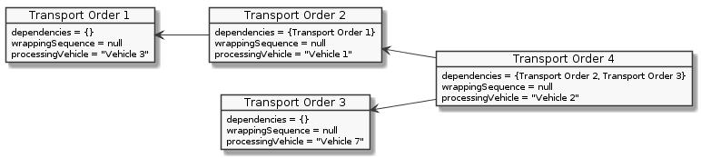
运输单优先级
在 openTCS 中，运输单没有优先级属性。 这是因为运输单的优先级可能会随时间变化或在添加其他运输单时发生变化。
最终，单个运输单的有效优先级取决于所使用的调度程序实现。 在 openTCS 的默认调度程序中，运输单的__截止时间__属性旨在用于优先级排序——截止时间越早，订单的有效优先级越高。 要从一开始就赋予运输单更高的优先级，您可以将其截止时间设置为早于所有其他订单的截止时间，例如设置为“现在”或过去的一个时间点。
4.7.2. 订单序列
注意：操作台应用程序目前不提供创建订单序列的方法。 它们只能通过专用客户端以编程方式创建，这些客户端不属于 openTCS 发行版的一部分。
订单序列描述了一个跨越多个运输单的过程，这些运输单必须由单一车辆按照序列定义的精确顺序依次执行。 一旦车辆被分配到订单序列，在该序列完成之前，它不得处理不属于该序列的运输单。
当由同一辆车执行的复杂过程无法映射到单个运输单时，订单序列非常有用。 例如，当过程中某些步骤的详细信息只有在处理完前面的步骤后才已知时，就会发生这种情况。
订单序列具有以下属性：
_运输单_序列，只要未设置完成标志（见下文），就可以扩展。
_完成_标志，指示不会再向序列中添加任何运输单。
此标志不可重置。
_故障致命_标志，指示如果序列中的一个运输单失败，除非失败的运输单被标记为可丢弃，否则其后的所有订单应立即被视为失败。
_已完成_标志，指示订单序列已被处理（且车辆不再绑定到它）。
只有先标记为完成的订单序列才能标记为已完成。
_订单类型_集合 —— 参见 运输单。
只有类型包含在订单序列的订单类型集合中的运输单才能被添加到其中。
可选的_预期车辆_，指示调度程序将订单序列分配给指定车辆，而不是自动选择一辆。
如果设置了此属性，则添加到订单序列中的所有运输单必须携带相同的预期车辆值。
.一个订单序列
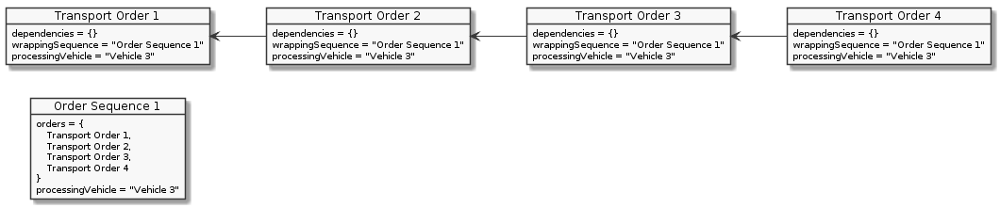
4.7.3. 外设任务
外设任务描述了由外设设备执行的操作。 外设任务具有以下属性：
由外设设备执行的_操作_ —— 参见 外设操作。
保留令牌，可用于保留外设设备。
为特定令牌保留的外设设备只能处理与该保留令牌匹配的任务 —— 参见 保留令牌。
可选的_相关车辆_，引用创建该外设任务的车辆。
可选的_相关运输单_，引用创建该外设任务的上下文中的运输单。
4.8. 公共元素属性
4.8.1. 唯一名称
每个工厂模型和工厂操作元素都有一个唯一的名称，用于在系统中识别它，无论其元素类型是什么。 两个元素不得被赋予相同的名称，即使例如一个是点位而另一个是运输单。
4.8.2. 通用属性
除了列出的属性外，还可以为所有行驶路线元素定义任意属性，以键值对的形式存在，例如可以被车辆驱动程序或客户端软件读取和评估。 键和值都可以是任意字符字符串。 例如，可以在模型中为车辆定义一个键值对 "IP 地址":`"192.168.23.42"，指明用于与车辆通信的 IP 地址；车辆驱动程序现在可以在运行时检查是否为键 "IP 地址" 定义了值，如果是，则使用它自动配置到车辆的通信通道。 这些通用属性的另一种用途是在模型中的某些路径上执行特定于车辆的操作。 如果车辆应该在当前位于某条路径时发出声音警告和/或打开右侧转向灯，可以为该路径定义键为 "声音警告" 和/或 "右侧转向灯"` 的属性，并由相应的车辆驱动程序进行评估。
4.9. 默认策略
openTCS 为每个策略模块提供了默认实现。 这些实现可以轻松替换以适应项目特定的要求。 （参见开发者指南。）
4.9.1. 默认调度器
当运输单或车辆可用时，调度器需要决定哪些运输单应如何处理，以及哪辆车应该做什么。 为了做出这个决定，默认调度器采取以下步骤：
准备新的运输单进行处理。
这包括检查一般可路由性和未完成的依赖关系。
执行当前活跃进程的更新。
这包括：
运输单的撤回
运输单的成功完成
为处理订单序列的车辆分配后续运输单
尽可能将当前空闲的车辆分配给可处理的运输单。
考虑车辆的准则包括：
* 它必须位于行驶路线中的已知位置。 * 它不得被分配给运输单，或者分配的运输单必须是 可放弃的。 例如，停车订单就是这种情况，或者如果车辆的能量水平不危急，充电订单也是这种情况。 * 它不得处理订单序列；或者，当前处理的运输单必须是 可放弃的，并且必须是标记为 完整 的订单序列中的最后一个订单。 * 其能量水平不得危急。 （能量水平危急的车辆仅在与第一个目的地操作是充电操作的运输单一起考虑时被纳入考虑。）
考虑运输单的准则包括：
* 它必须总体上可调度。 * 它不得属于已由车辆处理的订单序列的一部分。
分配机制如下：
* 如果空闲车辆少于可处理的运输单，则根据可配置的准则对车辆列表进行排序。 然后默认调度器遍历排序后的列表，并为每辆车找到所有可由其处理的订单，计算所需的路径，根据可配置的准则对候选项进行排序并分配第一个。 * 如果可处理的运输单少于空闲车辆，则根据可配置的准则对运输单列表进行排序。 然后默认调度器遍历排序后的列表，并为每个运输单找到所有可以处理它的车辆，计算所需的路径，根据可配置的准则对候选项进行排序并分配第一个。 *** 有关排序准则的配置选项，请参阅 默认调度器配置条目。
尽可能将仍然空闲的车辆发送到充电位置。
考虑车辆的准则包括：
* 它必须位于行驶路线中的已知位置。 * 其能量水平处于 降级 状态。
尽可能将仍然空闲的车辆发送到停车位置。
考虑车辆的准则包括：
* 它必须位于行驶路线中的已知位置。 * 它不得已经在停车位置。
默认停车位置选择
当将车辆发送到停车位置时，默认选择最近（根据路由器）的空闲位置。 可以通过在其上设置具有以下键的属性，将固定位置分配给车辆：
tcs:preferredParkingPosition:
预期为模型中点位的名称。 如果该点位已被占用，则改为选择最近的空闲停车位置（如果有）。
tcs:assignedParkingPosition:
预期为模型中点位的名称。 如果该点位已被占用，则车辆不会发送到任何其他停车位置，即停留在原地。 优先于 tcs:preferredParkingPosition。
可选停车位置优先级
可选地（有关如何启用它，请参阅 默认调度器配置条目），可以明确指定停车位置的优先级，并且车辆可以像“停车位置队列”一样重新停放。 这在某些情况下可能是可取的，例如将车辆停放在经常作为运输单第一目的地的位置附近。 （例如，想象一个工厂，货物一直在从 A 运送到 B。 即使当前没有任何运输单，优先考虑靠近 A 的停车位置以减少收到运输单时的反应时间可能仍然是个好主意。）
要为停车位置分配优先级，请在点位上设置键为 tcs:parkingPositionPriority 的属性。 属性的值应为十进制整数，较低的值导致较高的停车位置优先级。
|
注意
如果具有较高优先级的停车位置未被占用但车辆无法到达，则可能会选择具有较低优先级但可达的停车位置。 |
默认充电位置选择
当将车辆发送到充电位置时，默认选择最近（根据路由器）的空闲位置。 可以通过在其上设置具有以下键的属性，将固定位置分配给车辆：
tcs:preferredRechargeLocation:
预期为位置的名称。 如果该位置已被占用，则改为选择最近的空闲充电位置（如果有）。
tcs:assignedRechargeLocation:
预期为位置的名称。 如果该位置已被占用，则车辆不会发送到任何其他充电位置。 优先于 tcs:preferredRechargeLocation。
即时运输单分配
除了根据前几节中描述的流程和规则进行的运输单 隐式 分配外，运输单也可以 显式（即立即）分配。 支持运输单的即时分配，前提是运输单设置了预期的车辆。 在某些情况下这可能有帮助，其中运输单及其预期车辆通常处于可以进行分配的状态，但由于常规调度器流程中的某些过滤标准而被阻止。
尽管运输单的即时分配绕过了常规调度器流程中的一些过滤标准，但它仅在特定情况下有效。 关于运输单的状态：
运输单的状态必须为
DISPATCHABLE。运输单不得属于订单序列的一部分。
运输单的预期车辆必须已设置。
关于（预期）车辆的状态：
车辆的 processing 状态必须为
IDLE。车辆的状态必须为
IDLE或CHARGING。车辆的集成级别必须为
TO_BE_UTILIZED。车辆必须在已知位置报告。
车辆不得处理订单序列。
|
注意
除了相应运输单及其预期车辆的状态外，调度器可能有其他基于实现的理由来拒绝即时分配。 |
4.9.2. 默认路由器
默认路由器查找行驶路线中从一个位置到另一个位置的最便宜路径。 （它使用 Dijkstra 算法 的实现来完成此操作。） 它考虑了已锁定的路径，但不考虑位置和/或其他车辆的假设未来行为。 因此，它不会绕过阻挡道路的较慢或停止的车辆。
成本函数
用于评估行驶路线中路径的成本函数可以通过配置进行选择。 （请参阅 默认路由器配置条目，相关配置条目为 defaultrouter.shortestpath.edgeEvaluators。） 以下成本函数/配置选项可用：
DISTANCE（默认）：
路由成本等于路径的长度。
TRAVELTIME：
路由成本计算为在路径上旅行的预期时间（以秒为单位），即路径长度除以最大允许车辆速度。
EXPLICIT_PROPERTIES：
车辆在路径上的路由成本取自键为 tcs:routingCostForward 和 tcs:routingCostReverse 的路径属性。 要使用的 tcs:routingCostForwardExample 和 tcs:routingCostReverseExample 的路径属性中获取。 通过这种方式，可以为路径分配不同的路由成本，例如针对不同类型的车辆。 + 注意，为了使此成本函数正常工作，路由成本属性的值应为十进制整数。 例外情况是字符串 Infinity，可以将属性值设置为该字符串，表示该路径根本不得被 respective routing group 的车辆使用。
HOPS：
模型中每条路径的路由成本为 1，这将选择具有最少路径/点位的路线。
BOUNDING_BOX：
车辆在路径上的路由成本通过将车辆的边界框与路径目标点处的最大允许边界框进行比较来确定 -- 参见 Bounding box。 如果车辆的边界框超出目标点的边界框，则对应路径的路由成本被视为无限高，表示该路径不得被该车辆使用。 否则，对应路径的路由成本为 0。 这可用于防止车辆被路由到/通过空间不足的位置。
开发人员可以使用 openTCS API 集成额外的自定义成本函数。
可以通过用逗号分隔列出多个成本函数来选择多个成本函数。 然后分别计算的成本函数相加。 例如，当使用 "DISTANCE, TRAVELTIME" 时，路线成本的计算为路径长度之和加上车辆通过它所需的时间。
|
注意
将距离添加到持续时间显然没有意义。 |
用户有责任选择适用于各自用例且可用的配置。
路由组
在计算车辆路线时，可以对工厂中的车辆进行不同处理。 如果它们具有不同的特性并且实际上在行驶路线中具有不同的最佳路线，这可能是可取的。 为此，模型中的路径或使用的成本函数需要反映这种差异。 默认情况下不这样做 -- 除非另有指示，否则默认路由器以相同的方式为所有车辆计算路线。 为了让路由器知道它应该分别为车辆计算路线，请设置键为 tcs:routingGroup 的属性为任意字符串。 （具有相同值的车辆共享相同的路由表，空字符串是所有车辆的默认值。）
计算路线时避免/排除资源
在为运输单计算路线时，可以定义一组应避免由处理相应运输单的车辆使用的资源（即，点位、路径或位置）。 为此，可以在运输单上设置键为 tcs:resourcesToAvoid 的属性为逗号分隔的资源名称列表。
4.9.3. 默认调度器
默认调度器实现了一种简单的交通管理策略。 它通过仅允许工厂模型（点位、路径和位置）中资源的互斥使用来实现这一点，如下所述。
分配资源
当请求为一辆车分配一组资源时，调度器执行以下检查以确定是否可以立即授予分配：
检查请求资源的车辆是否 未 暂停。
检查请求的资源是否总体上对该车辆可用。
检查请求的资源是否属于类型为
SINGLE_VEHICLE_ONLY的区块。
如果不是，跳过此检查。 如果是，将请求的资源集扩展为有效资源集，并检查扩展后的资源是否对该车辆可用。
检查请求的资源是否属于类型为
SAME_DIRECTION_ONLY的区块。
如果不是，跳过此检查。 如果是，检查车辆打算穿越区块的方向是否与区块已被其他车辆穿越的方向相同。
检查与请求资源相关的区域是否对该车辆可用且未被其他车辆分配（前提是该请求资源的车辆引用了信封密钥，并且请求的资源使用该密钥定义了车辆信封）。
如果请求的资源或由其他车辆占用的资源属于区块，则检查的区域会扩展以包含这些区块中所有资源的信封（同时考虑涉及车辆的 respective 信封密钥）。
如果所有检查都成功，则进行分配。 如果任何检查失败，则分配排队等待稍后处理。
释放资源
每当资源被释放时（例如，当车辆完成移动到下一个点位并且车辆驱动程序向内核报告此情况时），都会检查队列中等待的分配（按照请求发生的顺序）。 现在可以进行任何分配。 无法进行的分配保持等待。
调度的公平性
此策略确保在资源可用时使用资源。 然而，它并不严格确保公平/避免饥饿： 等待分配大型资源集的车辆理论上可能会永远等待，如果其他车辆可以不断分配这些资源的子集。 这种情况很可能是工厂模型图拓扑中存在问题的提示，因此这种缺陷对于默认实现来说是可以接受的。
4.9.4. 默认外设任务调度器
当外设任务或外设设备可用时，外设任务调度器需要决定哪些外设任务应如何处理，以及哪个外设设备应该做什么。 为了做出这个决定，默认外设任务调度器采取以下步骤：
尽可能将当前空闲但其预留令牌已设置的外设设备分配给可处理的外设任务。
考虑外设设备的准则包括：
* 它不得被分配给外设任务。 * 它必须已设置其预留令牌。
考虑外设任务的准则包括：
* 它必须匹配外设设备的预留令牌。 * 它必须可由外设设备处理。
如果有多个满足这些条件的外设任务，则根据创建时间最旧的首先分配。
未能分配到具有匹配预留令牌的外设任务的外设设备将释放其预留。
预留外设设备的释放通过可替换的策略执行。
默认策略根据以下规则释放外设设备： * 外设设备的状态必须为 IDLE。 * 外设设备的 processing 状态必须为 IDLE。 *** 外设设备的预留令牌必须已设置。
尽可能将当前空闲且未设置其预留令牌的外设设备分配给可处理的外设任务。
考虑外设设备的准则包括：
* 它不得被分配给外设任务。 * 它不得已设置其预留令牌。
考虑外设任务的准则包括：
* 它必须总体上可供外设设备处理。 * 它必须可由外设设备处理。
为外设设备选择外设任务通过可替换的策略执行。
默认策略根据以下规则选择外设任务： * 外设任务操作的位置必须匹配给定位置。 * 如果有多个满足这些条件的外设任务，则根据创建时间最旧的首先选择。
预留令牌
如上所述，预留令牌与将外设任务分配给外设设备相关。 本节描述不同类型的预留令牌：
运输单的预留令牌。
可选地，可以提供运输单带有预留令牌。
如果运输单的预留令牌已设置，则它用于在运输单上下文中创建的外设任务（即，由处理运输单的车辆隐式创建的外设任务 - 参见 外设任务的隐式创建）。
外设任务的预留令牌。
外设任务必须始终提供预留令牌。
对于车辆作为它们遍历在其上定义了外设操作的路径而隐式创建的外设任务，预留令牌设置为
* 相应车辆正在处理的运输单的预留令牌 * 或者如果运输单上的预留令牌未设置，则为车辆的名称。
代表外设设备的位置的预留令牌。
最初，代表外设设备的位置的预留令牌未设置。
这表明外设设备总体上可用于接受任何预留令牌的外设任务。
一旦外设设备被分配了外设任务，位置的预留令牌将设置为外设任务的预留令牌。
结果，直到释放外设设备的预留（即，直到重置外设设备的预留令牌）之前，外设设备仅可用于具有相同预留令牌的外设任务。
4.10. 配置 openTCS
4.10.1. 应用程序语言
默认情况下，所有带有用户界面的 openTCS 应用程序均以英语显示文本。 不过，这些应用程序已为国际化做好准备，并且可以配置为以其他语言显示文本，前提是有相应的翻译版本。 openTCS 发行版包含默认（英语）语言和德语翻译。 可以集成额外的翻译——具体方法在《开发者指南》中描述。
要设置语言，每个应用程序都有一个需要设置为所用语言的 语言标签 的配置项。 （参见 Kernel Control Center application configuration entries, Model Editor application configuration entries 和 Operations Desk application configuration entries。） 语言标签的示例如下：
"en" 表示英语
"de" 表示德语
"no" 表示挪威语
"zh" 表示中文
默认情况下，配置项设置为 "en"，从而使用英语文本。 由于包含了德语翻译，您可以通过将其 locale 配置项设置为 "de" 来将例如 Operations Desk 应用程序切换为德语。 （请注意，应用程序需要重启才能生效。）
如果将应用程序配置为使用没有翻译的语言，则将使用默认（英语）语言。
4.10.2. 内核配置
内核应用程序从以下文件读取其配置数据：
config/opentcs-kernel-defaults-baseline.properties,config/opentcs-kernel-defaults-custom.properties以及config/opentcs-kernel.properties.
这些文件按此顺序读取，在一个文件中设置的配置值可以在随后的任何文件中被覆盖。 对于用户来说，建议不要修改前两个文件，仅在 opentcs-kernel.properties 中设置覆盖值和项目特定的配置数据。
内核应用程序配置项
内核应用程序本身可以使用以下配置项进行配置：
include::{configdoc}/KernelApplicationConfigurationEntries.adoc[]
订单池配置项
内核的运输单池可以使用以下配置项进行配置：
include::{configdoc}/OrderPoolConfigurationEntries.adoc[]
默认调度器配置项
默认调度器可以使用以下配置项进行配置：
include::{configdoc}/DefaultDispatcherConfigurationEntries.adoc[]
默认路由器配置项
默认路由器可以使用以下配置项进行配置：
include::{configdoc}/DefaultRouterConfigurationEntries.adoc[]
最短路径算法可以使用以下配置项进行配置：
include::{configdoc}/ShortestPathConfigurationEntries.adoc[]
边评估器 EXPLICIT_PROPERTIES 可以使用以下配置项进行配置：
include::{configdoc}/ExplicitPropertiesConfigurationEntries.adoc[]
默认外设任务调度器配置项
默认外设任务调度器可以使用以下配置项进行配置：
include::{configdoc}/DefaultPeripheralJobDispatcherConfigurationEntries.adoc[]
服务 Web API 配置项
内核的服务 Web API 可以使用以下配置项进行配置：
include::{configdoc}/ServiceWebApiConfigurationEntries.adoc[]
RMI 内核接口配置项
内核的 RMI 接口可以使用以下配置项进行配置：
include::{configdoc}/RmiKernelInterfaceConfigurationEntries.adoc[]
SSL 服务器端加密配置项
内核的 SSL 加密可以使用以下配置项进行配置：
include::{configdoc}/KernelSslConfigurationEntries.adoc[]
车辆位置解析器配置项
车辆位置解析器可以使用以下配置项进行配置：
include::{configdoc}/VehiclePositionResolverConfigurationEntries.adoc[]
虚拟车辆配置项
虚拟车辆（回环通信适配器）可以使用以下配置项进行配置：
include::{configdoc}/VirtualVehicleConfigurationEntries.adoc[]
虚拟外设配置项
虚拟外设（外设回环通信适配器）可以使用以下配置项进行配置：
include::{configdoc}/VirtualPeripheralConfigurationEntries.adoc[]
看门狗配置项
看门狗可以使用以下配置项进行配置：
include::{configdoc}/WatchdogConfigurationEntries.adoc[]
4.10.3. Kernel Control Center 配置
Kernel Control Center 应用程序从以下文件读取其配置数据：
config/opentcs-kernelcontrolcenter-defaults-baseline.properties,config/opentcs-kernelcontrolcenter-defaults-custom.properties以及config/opentcs-kernelcontrolcenter.properties.
这些文件按此顺序读取，在一个文件中设置的配置值可以在随后的任何文件中被覆盖。 对于用户来说，建议不要修改前两个文件，仅在 opentcs-kernelcontrolcenter.properties 中设置覆盖值和项目特定的配置数据。
Kernel Control Center 应用程序配置项
Kernel Control Center 应用程序本身可以使用以下配置项进行配置：
include::{configdoc}/KernelControlCenterApplicationConfigurationEntries.adoc[]
SSL KCC 侧应用程序配置项
Kernel Control Center 应用程序的 SSL 连接可以使用以下配置项进行配置：
include::{configdoc}/KccSslConfigurationEntries.adoc[]
4.10.4. Model Editor 配置
Model Editor 应用程序从以下文件读取其配置数据：
config/opentcs-modeleditor-defaults-baseline.properties,config/opentcs-modeleditor-defaults-custom.properties,config/opentcs-modeleditor.properties.
这些文件按此顺序读取，在一个文件中设置的配置值可以在随后的任何文件中被覆盖。 对于用户来说，建议不要修改前两个文件，仅在 opentcs-modeleditor.properties 中设置覆盖值和项目特定的配置数据。
Model Editor 应用程序配置项
Model Editor 应用程序本身可以使用以下配置项进行配置：
include::{configdoc}/ModelEditorConfigurationEntries.adoc[]
SSL Model Editor 侧应用程序配置项
Model Editor 应用程序的 SSL 连接可以使用以下配置项进行配置：
include::{configdoc}/PoSslConfigurationEntries.adoc[]
Model Editor 元素命名方案配置项
Model Editor 应用程序的元素命名方案可以使用以下配置项进行配置：
include::{configdoc}/PO_ElementNamingSchemeConfigurationEntries.adoc[]
4.10.5. Operations Desk 配置
Operations Desk 应用程序从以下文件读取其配置数据：
config/opentcs-operationsdesk-defaults-baseline.properties,config/opentcs-operationsdesk-defaults-custom.properties,config/opentcs-operationsdesk.properties.
这些文件按此顺序读取，在一个文件中设置的配置值可以在随后的任何文件中被覆盖。 对于用户来说，建议不要修改前两个文件，仅在 opentcs-operationsdesk.properties 中设置覆盖值和项目特定的配置数据。
Operations Desk 应用程序配置项
Operations Desk 应用程序本身可以使用以下配置项进行配置：
include::{configdoc}/OperationsDeskConfigurationEntries.adoc[]
SSL Operations Desk 侧应用程序配置项
Operations Desk 应用程序的 SSL 连接可以使用以下配置项进行配置：
include::{configdoc}/PoSslConfigurationEntries.adoc[]